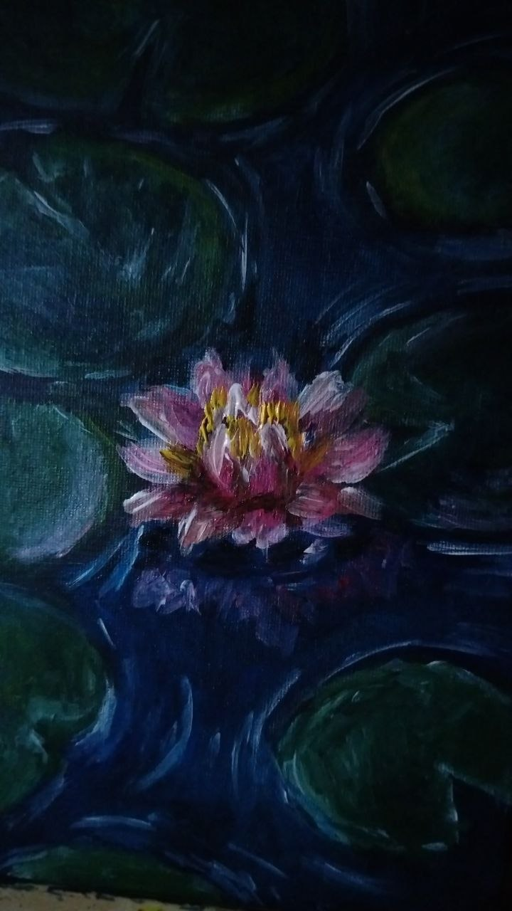
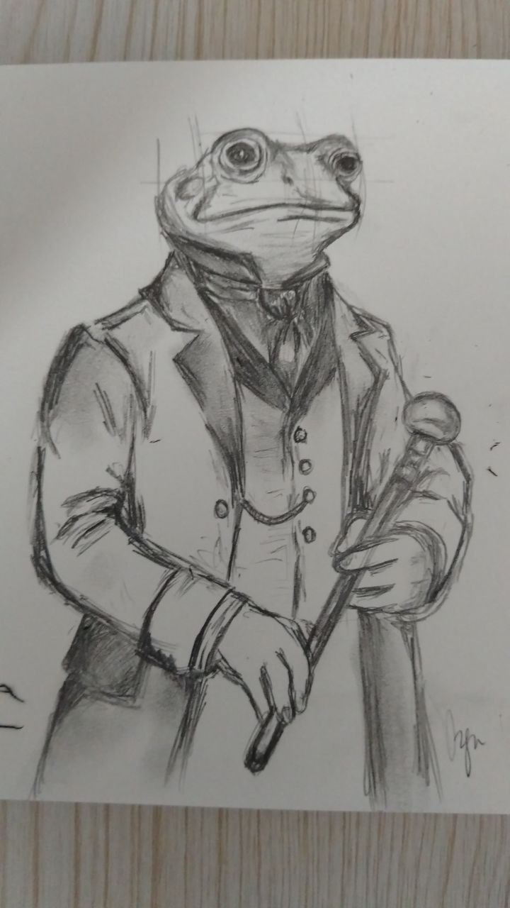
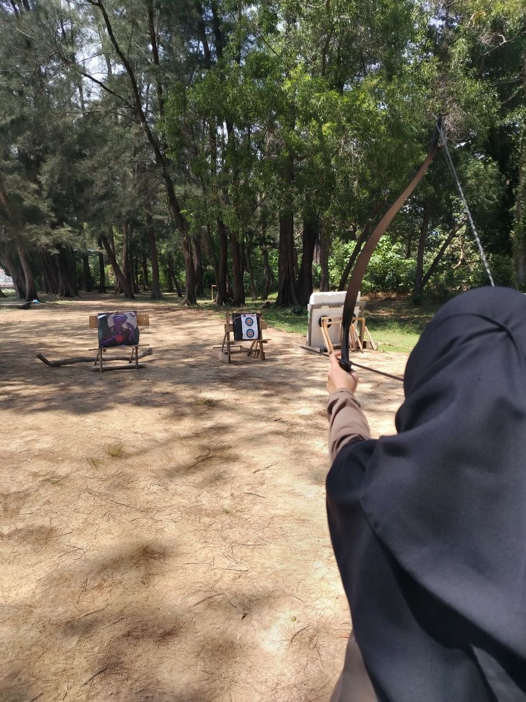

My Favourite Hobbies
Here are some of the things I enjoy doing in my free time.

Painting
Painting is one of the activities I enjoy doing during semester breaks or whenever I have free time at home. I like exploring different colour combinations and creating artwork based on my own ideas and inspiration. It gives me the opportunity to spend my time productively while developing my creativity and artistic abilities. I also find the process enjoyable because I can experiment with colours and turn a simple idea into something meaningful. Painting is a relaxing activity that allows me to enjoy my free time and appreciate the creative process.

Sketching
Sketching is a creative activity that allows me to turn my imagination into visual artwork. I enjoy experimenting with different drawing styles, shapes and details while developing my artistic skills. More importantly, sketching serves as a personal form of therapy for me. It gives me a quiet space to disconnect from everyday worries and express feelings that may be difficult to put into words. I find comfort in the process of creating something from a blank page, making sketching a meaningful way to relax and reconnect with myself.

Archery
Archery is one of my favourite recreational activities, and I enjoy participating in it during my free time. I find this activity both challenging and rewarding as it requires concentration, patience, accuracy and self-discipline. Through archery, I have the opportunity to develop my focus, improve my coordination and enhance my ability to remain calm under pressure. Besides improving my skills, I also enjoy meeting new people, making new friends and building meaningful connections with others who share similar interests. For me, archery is not only an enjoyable pastime but also a valuable opportunity for personal growth and social interaction.